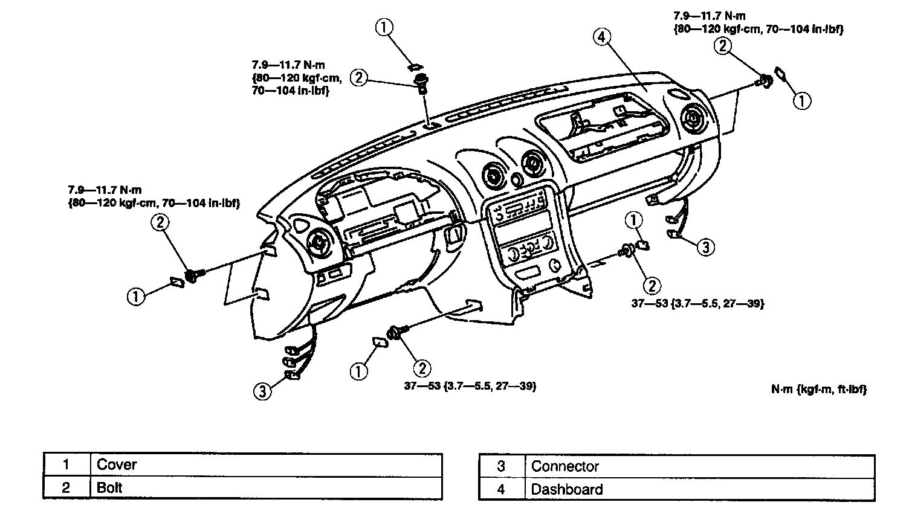

Dashboard Removal and Installation
1. Disconnect the negative battery cable.2. Remove the driver-side air bag module.
3. Remove the passenger-side air bag module.
4. Remove the A-pillar trim.
5. Remove the console.
6. Remove the lower panel.
7. Remove the instrument cluster.
8. Remove the glove compartment.
9. Remove the hood release lever.
10. Remove the control wire of the heater unit and blower unit.
11. Remove the installation bolts and nuts fixing the steering shaft to the dashboard, and pull down the steering shaft.

12. Remove in the order indicated in the table.
13. Install in the reverse order of removal.